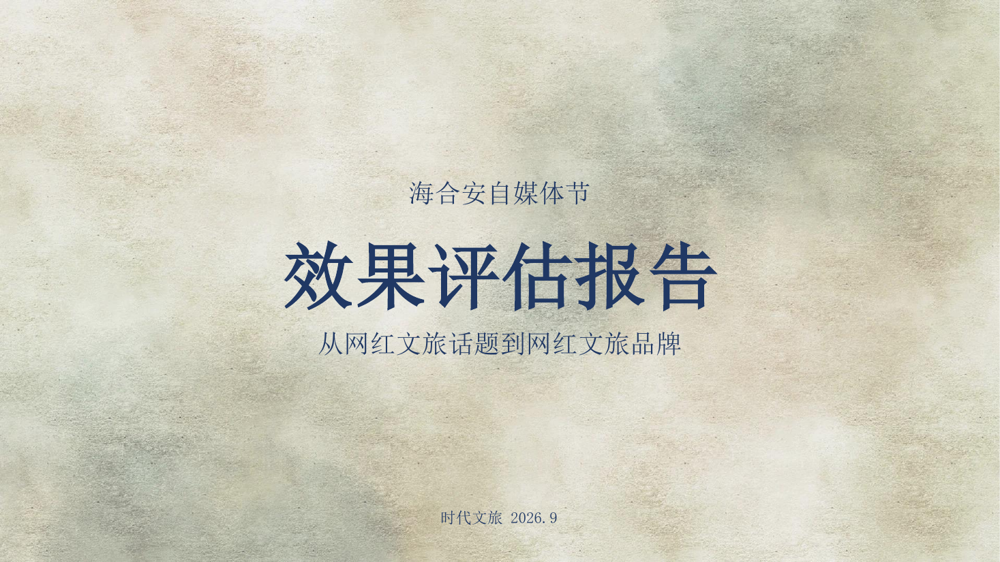

01
Hahean · Self-media Festival
让每一座城，
都有自己的声量。
项目背景
海合安在多个城市运营文旅项目，需要一个能同时带动账号活跃、员工参与和线下曝光的自媒体活动。
难点不在于做出一个热闹的话题，而在于让不同城市、不同账号、不同团队都能理解同一套玩法，并且真的执行下去。活动方案要回答三个问题：谁来参与、发什么内容、怎么判断有效。
我的工作
参与活动全案撰写，从主题、参与机制到内容排期；设计「全民新媒体」的参与路径，让员工、商户与游客都能成为内容生产者；搭建 5 城账号联动的内容矩阵与话题节奏；输出曝光、互动、转化三层效果评估框架。
方案落地后持续跟进执行，推动它从一次活动变成可复用的常态化机制。
关键动作
-
用一个城市级母题统一五城 以 #为城市分享快乐# 组织活动，让青岛、成都、天津、武汉、苏州不再各自做一波活动，而是形成同一套内容叙事。
-
把全员参与做成内容供应链 设计内容中央厨房、联合爆款组、动物 IP、员工 IP 与城市事件五层引擎，降低员工找素材、写文案和执行发布的成本。
-
把结果写成可继续执行的规则 从内容数量、爆款、矩阵协同与组织参与评估效果，再把有效动作沉淀为常态化的内容分享、素材共享和激励机制。
方案页预览
从概念、目标与机制三个层级展示方案主线。以下为本项目脱敏页面，不包含客户内部预算和未公开数据。

自媒体、自生长、自代言。

五城联动与内容规模目标。

从内容供给到城市事件逐层放大。
项目结果
05城市账号联动
03层效果评估指标
1套常态化活动机制
复盘
这个项目让我意识到，全案的价值不只在 PPT 的完整度，而在别人能不能照着做。好的方案要能把「想法」翻译成「动作」，再把「动作」翻译成「可复盘的指标」。
注：本页仅展示项目方法、个人工作内容与方案框架。客户内部预算、后台数据、完整原始文件与未公开执行信息均已脱敏或省略。
Next Project
正佳帽峰湾文旅度假区 →
返回策划能力